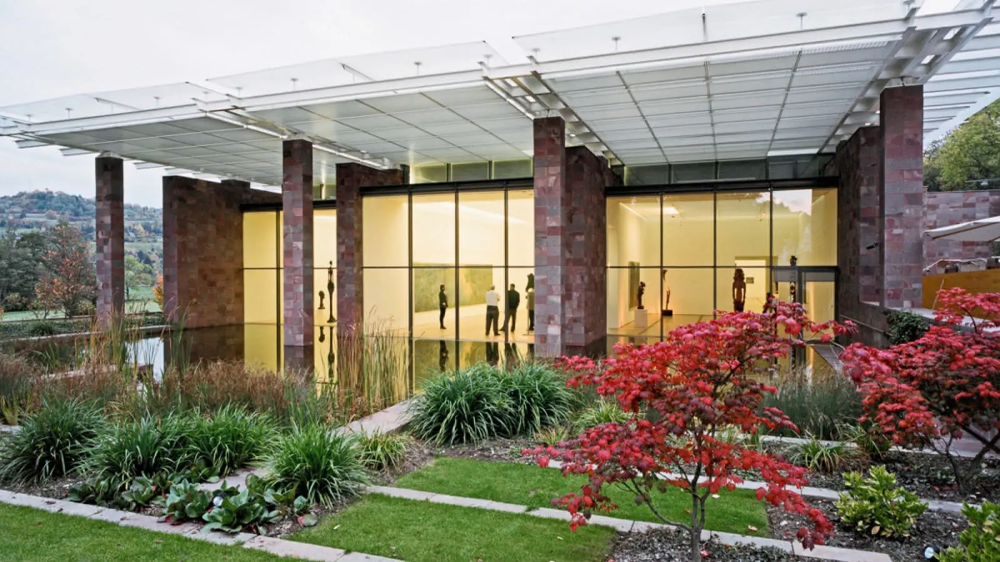
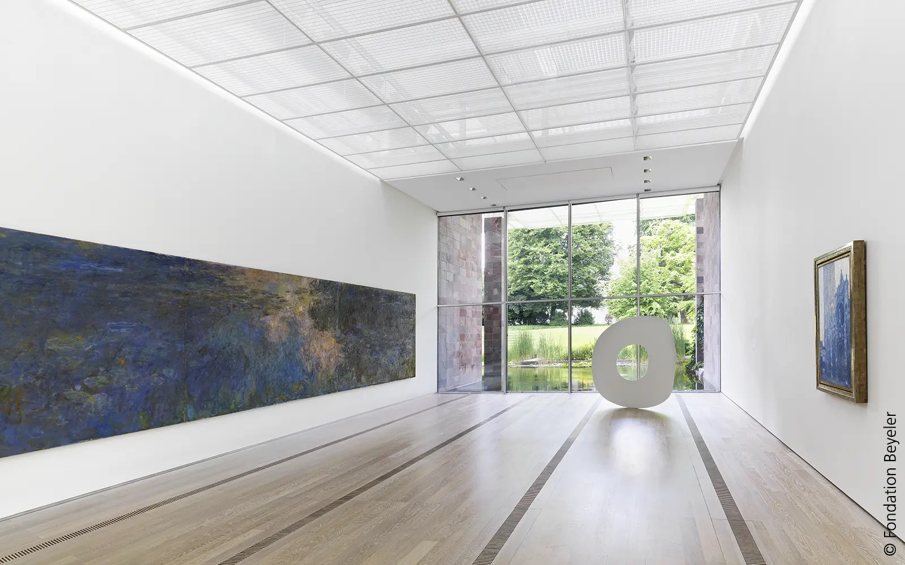
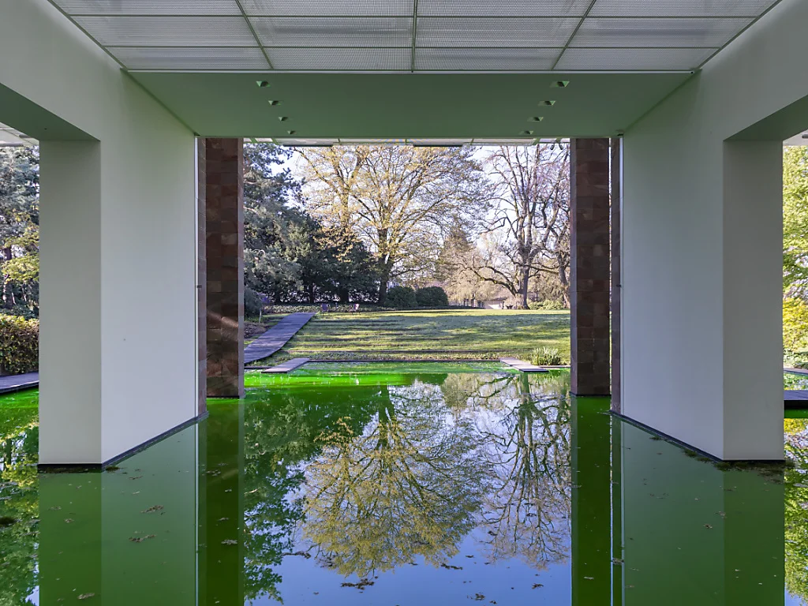

FONDATION BEYELER
HISTOIRE
La Fondation Beyeler, située à Riehen, près de Bâle en Suisse, est un remarquable musée d'art moderne et contemporain. Son histoire remonte à 1982, lorsque le collectionneur d'art Ernst Beyeler et sa femme Hildy ont fondé la galerie Beyeler. Leur passion pour l'art a rapidement évolué vers la création d'un musée, désireux de partager leur collection avec le public.
En 1997, la Fondation Beyeler a ouvert ses portes au sein d'un bâtiment conçu par l'architecte Renzo Piano. Le musée, entouré d'un superbe jardin paysager, offre un espace lumineux et spacieux pour exposer les œuvres d'art. La conception architecturale de Piano met l'accent sur la lumière naturelle et crée une atmosphère où les œuvres d'art dialoguent harmonieusement avec l'environnement.
La collection de la Fondation Beyeler présente un large éventail d'œuvres d'art moderne et contemporain, comprenant des pièces de grands maîtres tels que Picasso, Monet, Rothko, et bien d'autres. En plus des expositions permanentes, le musée organise régulièrement des expositions temporaires mettant en lumière des artistes contemporains émergents ou des thèmes artistiques spécifiques
INFLUENCE DE PIANO
Renzo Piano a joué un rôle déterminant dans la conception architecturale de la Fondation Beyeler. Son approche sensible et respectueuse de l'environnement a grandement influencé le design du musée, créant un espace qui s'harmonise parfaitement avec les œuvres d'art et la nature environnante.
L'une des influences majeures de Renzo Piano sur la Fondation Beyeler réside dans son utilisation experte de la lumière naturelle. Le bâtiment qu'il a conçu est caractérisé par de grandes surfaces vitrées qui permettent à la lumière naturelle de pénétrer dans les galeries, offrant ainsi un éclairage idéal pour apprécier les œuvres d'art. Cette lumière changeante tout au long de la journée crée une atmosphère dynamique et met en valeur les différentes textures et couleurs des œuvres exposées.
De plus, la conception de Renzo Piano a intégré le paysage environnant dans l'expérience muséale. Le musée est entouré d'un magnifique jardin paysager, et l'architecture du bâtiment permet aux visiteurs de profiter de vues panoramiques sur la nature environnante tout en déambulant à travers les galeries.

DÉCOUVRIR
Si l’article vous a plu, n’hésitez pas à lire celui sur the Shard, une autre grande œuvre de Piano.